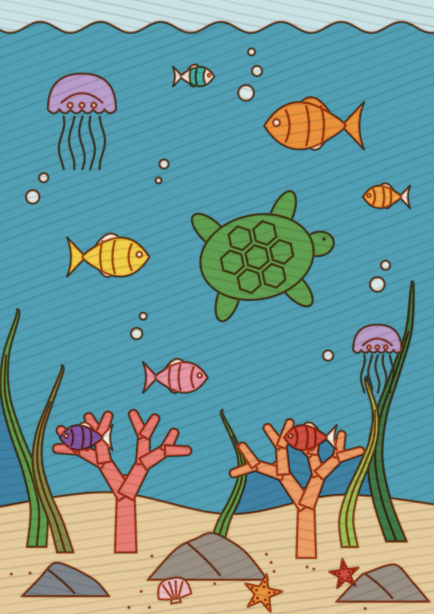
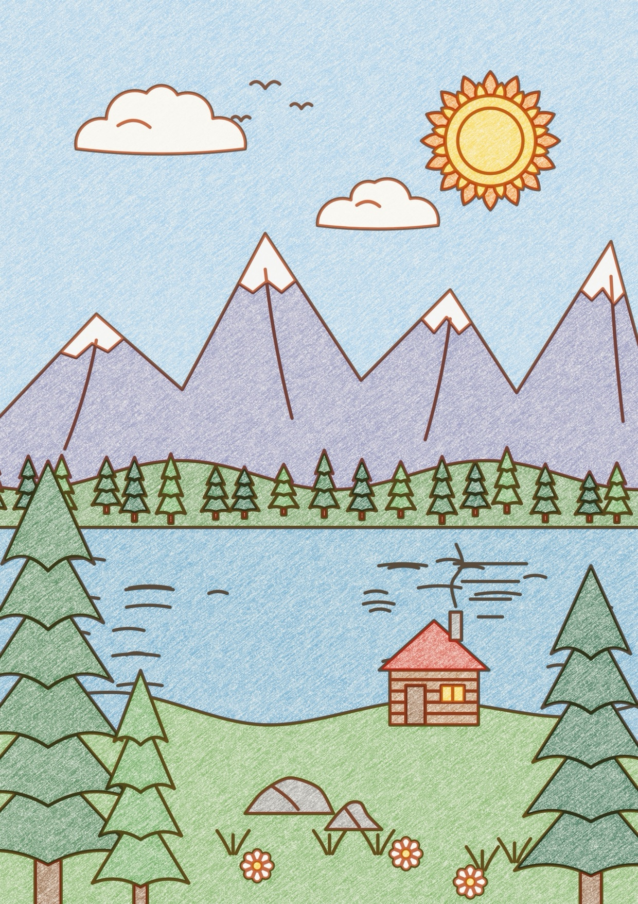
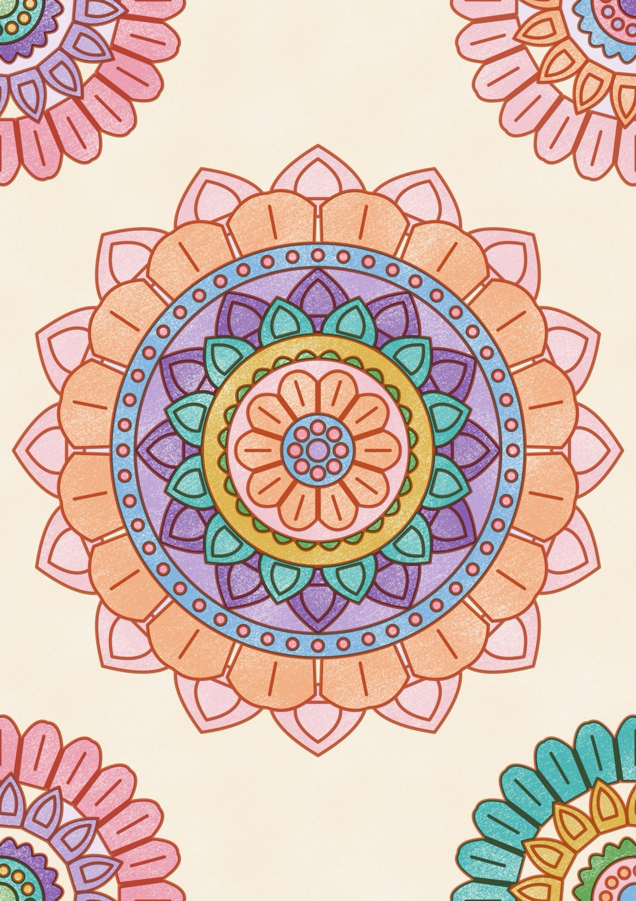
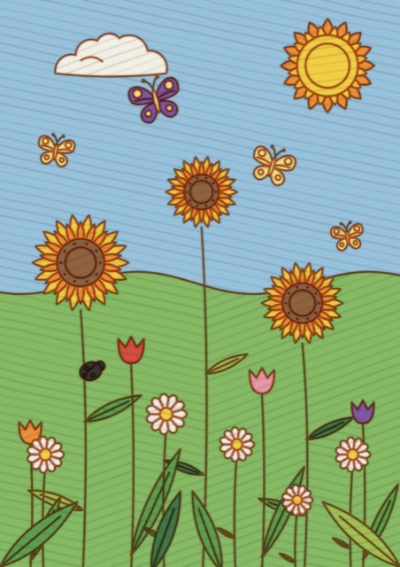

Fondo marino Muestra · coloreado con marcadores

Montaña, lago y pinos Muestra · coloreado con lápices de colores

Mandala loto Muestra · coloreado con crayones
Jardín de mariposas Muestra · coloreado con marcadores
